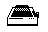
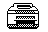
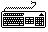

Das Disketten- Die Pinbelegung des ATARI-Floppysteckers
Das Disketten- Die Pinbelegung des ATARI-Floppysteckerslaufwerk
Die verschiedenen Diskettenlaufwerke
Allgemeine Tips zur Fehlersuche
Der 26/34 polige Shugart-Bus der Floppy
 SMM Nadeldrucker Der Nadeldrucker SMM804
 SLM Laserdrucker Der Laserdrucker SLM605
Der Laserdrucker SLM804
Die Wartung und Reparatur des SLM605/804
Festplatten Die SH204 Festplatte
und Controller
AHDI und HDX Die SH205 Festplatte (Megafile20)
Die Megafile 30 und 60 Festplatte
Einbau einer zweiten Platte in die Megafile 20/30/60
Die Megafile 44 Wechselplatte
Der Einbau der zweiten Festplatte in die Megafile 44
Megafile 44 Hostadapter auf Parity umrÅEten
Von ATARI modifizierte Hardware
AHDI und HDX Versionsnummern und Features
Die CD ROM Laufwerke CDAR 504 und CDAR 505
 Die Tastatur Externe Tastatur am 260/520/1040ST(E)/Falcon030
Warum 'schnarrt' es aus dem Lautsprecher?
Tastaturen-‹bersicht
Ein DCF-77 Decoder in der Tastatur
 Die Monitore Der SM124 Monitor
Die Monitore Der SM124 MonitorDer SM125 Monitor
Der SM144 Monitor
Der SM146 Monitor
Der SC1224 Monitor
Der SC1225 Monitor
weiterbl‰ttern